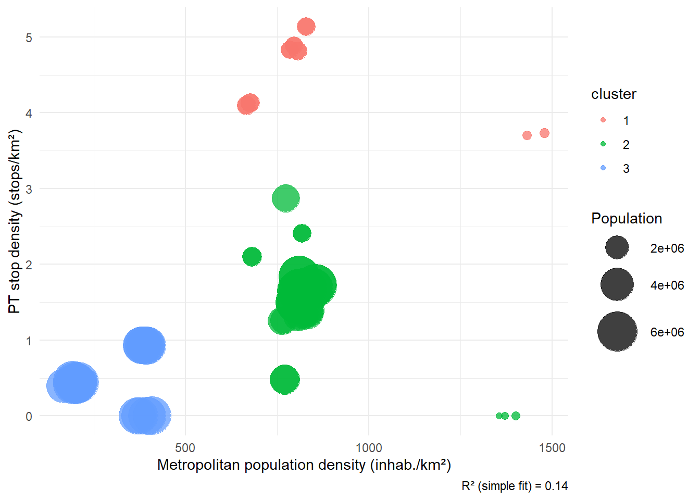
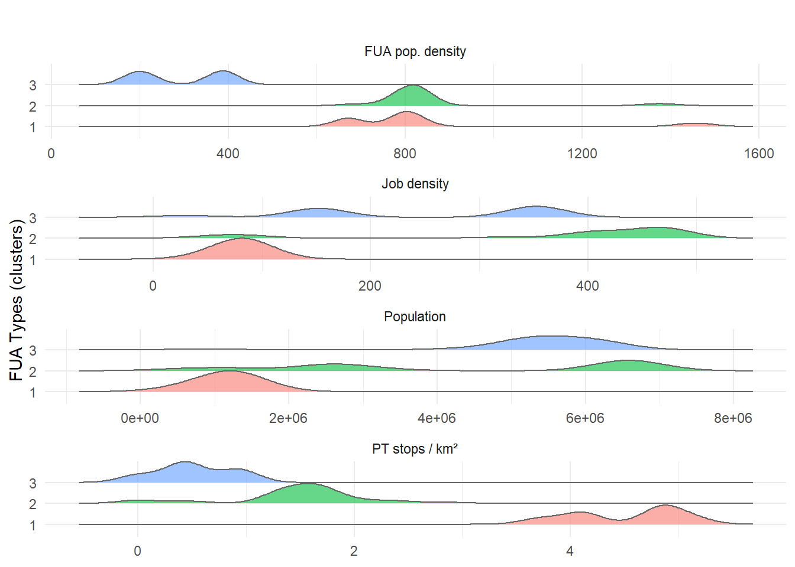

library(tidyverse)
library(readr)
library(fixest)
library(broom)
library(GGally)
library(patchwork)
library(corrr)
library(ggplot2)
library(ggridges)
library(eurostat)
library(corrr)
library(corrplot)
library(glmnet)
library(car)
library(tinytex)Annex I - Clustering FUAs
Download the EMTA Barometer open data, which provides annual statistics on public transport (infrastructure, ridership, etc.) in the largest European cities. Available from: https://sites.google.com/dataveyes.com/emta-barometer/download-data
loc_eu <- locale(encoding = "UTF-8", decimal_mark = ".", grouping_mark = ",") #define decimal and thousand separators
file_path <- "EMTA_Barometer_Opendata_2.txt" #The path towards the downloaded data
data_long <- read_delim(file_path, delim = ";", show_col_types = FALSE, locale = loc_eu,
na = c("", "NA", "n/a", "-", "NULL"), trim_ws = TRUE)
data_wide <- data_long %>%
pivot_wider(id_cols = c(PTA, PERIMETER, MODE, YEAR),
names_from = ITEM,
values_from = VALUE,
values_fn = list(VALUE = first)) %>%
mutate(across(c(POP, AREA_TOT, AREA_URB, GDP, PLACEKM, PKM, MS_PT, MS_WLK, MS_CYC,
NETLEN, NETSTOPS, BOARDINGS, COSTOP, FARE_MPASS, REV_TOTAL,
REV_FARES, MOTOR), ~ parse_number(.x, locale = loc_eu)))
#Assign countries to cities
pta_country <- tibble::tibble(
PTA = c("AMS", "ATH", "BAR", "BEL", "BER", "BIL", "BIR", "BRU", "BUC", "BUD", "COP", "FRA", "HEL", "KRA", "LIS", "LON", "LYO", "MAD", "MAL", "MAN", "OSL", "PAR", "POR", "PRA", "ROT", "SOF", "STO", "STU", "THE", "TOU", "TUR", "VAL", "VIE", "VIL", "WAR"),
Country = c("Netherlands", "Greece", "Spain", "Serbia", "Germany", "Spain", "United Kingdom", "Belgium", "Romania", "Hungary", "Denmark", "Germany", "Finland", "Poland", "Portugal", "United Kingdom", "France", "Spain", "Spain", "United Kingdom", "Norway", "France", "Portugal", "Czechia", "Netherlands", "Bulgaria", "Sweden", "Germany", "Greece", "France", "Italy", "Spain", "Austria", "Lithuania", "Poland")
)
data_wide <- data_wide %>%
left_join(pta_country, by = "PTA")Define two distinct variable sets:
(i) Urban-form explanatory variables (city_vars) which include measures of the core compactness (density_city_total, density_city_builtup), as well as the overall metropolitan density (density_pta_total, density_pta_builtup), and spatial structure (centrality).
(ii) Public-transport coverage (network_vars, network_mode_vars) metrics (e.g. route-kilometres per capita, stops per km²);
pta_vars <- data_wide %>%
filter(PERIMETER == "PTA", MODE == "ALL") %>%
dplyr::select(PTA, YEAR,
POP_PTA = POP,
AREA_TOT = AREA_TOT,
AREA_URB_PTA = AREA_URB,
GDP,
BOARDINGS,
MS_PT, MS_WLK, MS_CYC)
city_vars_1 <- data_wide %>%
filter(PERIMETER == "CITY", MODE == "ALL") %>%
dplyr::select(PTA, YEAR,
POP_CITY = POP,
AREA_TOT_CITY = AREA_TOT,
AREA_URB_CITY = AREA_URB)
city_vars_2 <- pta_vars %>%
left_join(city_vars_1, by = c("PTA", "YEAR")) %>%
mutate(
ridership_ms = MS_PT / 100,
ridership_pc = BOARDINGS / POP_PTA,
ridership_mstot = (MS_PT + MS_WLK + MS_CYC) / 100,
# Densidades
density_pta_total = POP_PTA / AREA_TOT,
density_pta_builtup = POP_PTA / AREA_URB_PTA,
density_city_total = POP_CITY / AREA_TOT_CITY,
density_city_builtup = POP_CITY / AREA_URB_CITY,
centrality = POP_CITY / POP_PTA
)
network_vars <- data_wide %>%
filter(PERIMETER == "PTA", MODE != "ALL") %>%
group_by(PTA, YEAR) %>%
summarise(
NETLEN = sum(NETLEN, na.rm = TRUE),
NETSTOPS = sum(NETSTOPS, na.rm = TRUE),
.groups = "drop"
)
network_mode_vars <- data_wide %>%
filter(PERIMETER == "PTA", MODE %in% c("BUS", "TRAM", "METRO", "LRAIL", "COMRAIL", "REGRAIL")) %>%
group_by(PTA, YEAR, MODE) %>%
summarise(NETSTOPS = sum(NETSTOPS, na.rm = TRUE),
.groups = "drop") %>%
pivot_wider(names_from = MODE, values_from = NETSTOPS, names_prefix = "NETSTOPS_")
df_model <- city_vars_2 %>%
left_join(network_vars, by = c("PTA", "YEAR")) %>%
left_join(network_mode_vars, by = c("PTA", "YEAR")) %>%
left_join(pta_country, by = "PTA") %>%
mutate(
supply_km_km2 = NETLEN / POP_PTA,
supply_stops_km2 = NETSTOPS / AREA_TOT,
# Mode-specific coverage densities
supply_stops_km2_BUS = NETSTOPS_BUS / AREA_TOT,
supply_stops_km2_TRAM = NETSTOPS_TRAM / AREA_TOT,
supply_stops_km2_METRO = NETSTOPS_METRO / AREA_TOT,
supply_stops_km2_LRAIL = NETSTOPS_LRAIL / AREA_TOT,
supply_stops_km2_COMRAIL = NETSTOPS_COMRAIL / AREA_TOT,
supply_stops_km2_REGRAIL = NETSTOPS_REGRAIL / AREA_TOT
) %>%
drop_na()Finally, to the explanatory variables set, we add job-related density as a socio-economic variables in the FUA (job_density, city_fua_ratio), in which the job_density represents the overall density in the FUA, and city_fua_ratio captures the centrality of jobs in the core of the FUA.
# 1. Load job market data from Eurostat directly through the eurostat package for R
llma_raw <- get_eurostat("urb_llma", time_format = "num")
clma_raw <- get_eurostat("urb_clma", time_format = "num")
met_d3area_raw <-get_eurostat("met_d3area", time_format = "num")
# 2. Filter for year 2022
llma_bui <- llma_raw %>%
filter(indic_ur == "EC2020V", TIME_PERIOD == 2022, grepl("F$", cities)) %>%
mutate(base_code = substr(cities, 1, 5)) %>%
select(base_code, jobs_fua = values)
clma_bui <- clma_raw %>%
filter(indic_ur == "EC2020V", TIME_PERIOD == 2022, grepl("C$", cities)) %>%
mutate(base_code = substr(cities, 1, 5)) %>%
select(base_code, jobs_city = values)
aera_bui <- met_d3area_raw %>%
filter(landuse == "L0008", TIME_PERIOD == 2022) %>%
mutate(metroreg = substr(metroreg, 1, 5)) %>%
select(metroreg, area = values)
# 3. Join job data to the base_code capturing the city identifier
df_jobs <- full_join(clma_bui, llma_bui, by = "base_code") %>%
filter(!is.na(jobs_city), !is.na(jobs_fua)) %>%
mutate(city_fua_ratio = jobs_city / jobs_fua)
df_jobs <- full_join(df_jobs, aera_bui, by=c("base_code"="metroreg")) %>%
mutate (job_density= jobs_fua/area)
dic_cities <- get_eurostat_dic("cities")
dic_cities$code_name <- substr(dic_cities$code_name,1,5)
df_jobs_named <- df_jobs %>%
left_join(
dic_cities %>%
distinct(code_name, full_name), # Remove duplicates
by = c("base_code" = "code_name")
) %>%
rename(fua_name = full_name)
df_jobs_named <- df_jobs_named %>%
mutate(base_code = as.character(base_code))
#4. Join the data tothe original FUA list
pta_basecode_map <- tibble::tibble(
PTA = c("BAR", "BER", "BIL", "BRU", "BUD", "FRA", "HEL", "MAD", "MAL", "STU", "TUR", "VAL", "VIE", "VIL"),
base_code = c("ES002", "DE001", "ES019", "BE001", "HU001", "DE005", "FI001", "ES001", "ES006", "DE007", "FI003", "ES003", "AT001", "LT001")
)
df_model_joined <- df_model %>%
left_join(pta_basecode_map, by = "PTA") %>%
left_join(df_jobs_named, by = "base_code")To gauge the combined influence of all four variable blocks, we fit a OLS specification in which public-transport stop density (supply_stops_km2) is regressed on:
Core-compactness metrics (
density_city_total, density_city_builtup)Overall metropolitan density (
density_pta_total, density_pta_builtup)Spatial structure (
centrality)Socio-economic variables (
job_density, city_fua_ratio)Year and country fixed effects (
as.factor(YEAR), as.factor(Country))
fit_pt_stop_density <- lm(supply_stops_km2 ~ density_city_total + density_pta_total + density_pta_builtup + density_city_builtup + centrality + job_density + city_fua_ratio + as.factor(YEAR) + as.factor(Country), data = df_model_joined)
summary(fit_pt_stop_density )
Call:
lm(formula = supply_stops_km2 ~ density_city_total + density_pta_total +
density_pta_builtup + density_city_builtup + centrality +
job_density + city_fua_ratio + as.factor(YEAR) + as.factor(Country),
data = df_model_joined)
Residuals:
Min 1Q Median 3Q Max
-1.41236 -0.36308 0.06878 0.31489 1.21663
Coefficients:
Estimate Std. Error t value Pr(>|t|)
(Intercept) 5.004e+00 5.773e+00 0.867 0.39013
density_city_total -3.706e-03 2.409e-03 -1.538 0.13021
density_pta_total 1.034e-02 3.577e-03 2.892 0.00562 **
density_pta_builtup 2.726e-04 1.670e-04 1.632 0.10874
density_city_builtup -3.027e-04 1.415e-04 -2.139 0.03724 *
centrality -3.115e+00 7.624e+00 -0.409 0.68461
job_density 1.463e-02 1.847e-02 0.792 0.43185
city_fua_ratio 3.101e+01 1.182e+01 2.622 0.01149 *
as.factor(YEAR)2014 -2.511e-02 3.512e-01 -0.072 0.94327
as.factor(YEAR)2015 -9.517e-02 3.662e-01 -0.260 0.79600
as.factor(YEAR)2016 -5.850e-01 3.874e-01 -1.510 0.13721
as.factor(YEAR)2017 6.063e-01 4.494e-01 1.349 0.18325
as.factor(YEAR)2018 6.547e-01 5.085e-01 1.287 0.20375
as.factor(YEAR)2019 7.304e-01 5.801e-01 1.259 0.21372
as.factor(YEAR)2020 8.920e-02 5.970e-01 0.149 0.88182
as.factor(YEAR)2021 9.881e-01 7.177e-01 1.377 0.17461
as.factor(YEAR)2022 1.642e+00 7.045e-01 2.331 0.02373 *
as.factor(YEAR)2023 1.624e+00 7.854e-01 2.068 0.04375 *
as.factor(Country)Finland -1.342e+01 8.321e+00 -1.612 0.11308
as.factor(Country)Germany -1.612e+01 1.030e+01 -1.565 0.12369
as.factor(Country)Italy -2.596e+00 2.764e+00 -0.939 0.35196
as.factor(Country)Lithuania -3.940e+01 1.842e+01 -2.139 0.03727 *
as.factor(Country)Spain -2.205e+01 1.255e+01 -1.757 0.08491 .
---
Signif. codes: 0 '***' 0.001 '**' 0.01 '*' 0.05 '.' 0.1 ' ' 1
Residual standard error: 0.6542 on 51 degrees of freedom
(76 observations deleted due to missingness)
Multiple R-squared: 0.8664, Adjusted R-squared: 0.8087
F-statistic: 15.03 on 22 and 51 DF, p-value: 2.809e-15The full-controls specification—which adds both country and year fixed effects to the urban-form block—explains nearly 87 % of the variation in surface-stop density (adj. R² = 0.81). Once national dummies absorb cross-country heterogeneity, only metropolitan population density (density_pta_total) retains a positive, statistically significant effect ( t ≈ 2.9, p ≈ 0.006). All alternative morphology metrics either lose significance or flip sign and become collinear.
These patterns indicate that metropolitan-wide density is the only urban-form attribute whose influence survives once national context is held constant. To avoid multicollinearity, maximise sample size, and keep the model interpretable, we therefore drop the redundant covariates and re-estimate a specification that retains density_pta_total alongside the country and year fixed effects.
fit_core <- lm(
supply_stops_km2 ~ density_pta_total + factor(YEAR) + factor(Country),
data = df_model_joined
)
summary(fit_core )
Call:
lm(formula = supply_stops_km2 ~ density_pta_total + factor(YEAR) +
factor(Country), data = df_model_joined)
Residuals:
Min 1Q Median 3Q Max
-2.7330 -0.3056 0.0121 0.2406 5.0121
Coefficients:
Estimate Std. Error t value Pr(>|t|)
(Intercept) -0.1218533 0.7384921 -0.165 0.8692
density_pta_total 0.0007739 0.0001308 5.917 3.03e-08 ***
factor(YEAR)2014 -0.0349211 0.4527469 -0.077 0.9386
factor(YEAR)2015 -0.0588648 0.4451113 -0.132 0.8950
factor(YEAR)2016 -0.5804466 0.4328281 -1.341 0.1824
factor(YEAR)2017 -0.0806696 0.4262426 -0.189 0.8502
factor(YEAR)2018 -0.0720508 0.4277533 -0.168 0.8665
factor(YEAR)2019 0.0344709 0.4163001 0.083 0.9341
factor(YEAR)2020 -0.2652264 0.4225014 -0.628 0.5313
factor(YEAR)2021 -0.0544375 0.4942806 -0.110 0.9125
factor(YEAR)2022 0.3846243 0.4947104 0.777 0.4384
factor(YEAR)2023 0.1876878 0.4445351 0.422 0.6736
factor(Country)Denmark 1.4367098 0.8569274 1.677 0.0962 .
factor(Country)Finland 3.7180675 0.8332343 4.462 1.81e-05 ***
factor(Country)France 4.3427844 0.9256151 4.692 7.09e-06 ***
factor(Country)Germany 0.6669973 0.8169715 0.816 0.4158
factor(Country)Greece 0.7181130 1.3435460 0.534 0.5940
factor(Country)Italy 0.1980941 1.3442415 0.147 0.8831
factor(Country)Lithuania 0.5300075 0.9419118 0.563 0.5747
factor(Country)Netherlands 2.0507889 1.1075929 1.852 0.0665 .
factor(Country)Norway 1.5882530 0.9157731 1.734 0.0854 .
factor(Country)Poland 1.5431743 1.1263100 1.370 0.1731
factor(Country)Portugal -0.6846486 1.0223835 -0.670 0.5043
factor(Country)Serbia 1.0999278 0.8904302 1.235 0.2191
factor(Country)Spain 1.2042661 0.8290782 1.453 0.1489
factor(Country)Sweden 0.8483459 0.9032462 0.939 0.3495
factor(Country)United Kingdom 9.6353007 0.9161499 10.517 < 2e-16 ***
---
Signif. codes: 0 '***' 0.001 '**' 0.01 '*' 0.05 '.' 0.1 ' ' 1
Residual standard error: 1.035 on 123 degrees of freedom
Multiple R-squared: 0.9571, Adjusted R-squared: 0.9481
F-statistic: 105.6 on 26 and 123 DF, p-value: < 2.2e-16Metropolitan population density is the sole urban-form driver that survives once country and year fixed effects are added:
density_pta_totalremains positive and highly significant (β ≈ 7.7 × 10⁻⁴, p < 10⁻⁷).Year dummies are insignificant, indicating minor temporal variation once structure is controlled.
A handful of country dummies (e.g., FI, FR, UK) differ from the reference, highlighting national network standards.
This pared-down model still explains around 95 % of the variance, confirming that metropolitan density is the key morphology lever for stop supply across European FUAs. To identify meaningful peer groups, we cluster FUAs only on the two variables that explain public-transport provision:
| Variable | Interpretation |
|---|---|
density_pta_total |
Metropolitan population density (morphological driver) |
supply_stops_km2 |
Surface public-transport stop density (service intensity) |
library(dplyr)
library(ggplot2)
# 1. Build the clustering data set
df_cluster <- df_model_joined %>%
select(
PTA,
POP_PTA, # population
supply_stops_km2,
density_pta_total,
job_density
) %>%
na.omit()
# 2. K-means on scaled variables
set.seed(123)
kmeans_result <- kmeans(
scale(df_cluster %>% select(supply_stops_km2, density_pta_total)),
centers = 3, nstart = 25
)
df_cluster$cluster_raw <- kmeans_result$cluster # original labels 1–3
# 3. Rank clusters by *median* PT supply and relabel so highest = "1"
cluster_ranking <- df_cluster %>%
group_by(cluster_raw) %>%
summarise(med_supply = median(supply_stops_km2), .groups = "drop") %>%
arrange(desc(med_supply)) %>%
mutate(new_label = factor(row_number(), levels = 1:3))
df_cluster <- df_cluster %>%
left_join(cluster_ranking, by = "cluster_raw") %>%
mutate(cluster = new_label) # final ordered factor 1, 2, 3
# 4. Quick check of medians
df_cluster %>%
group_by(cluster) %>%
summarise(
n = n(),
med_stops_km2 = median(supply_stops_km2),
med_density_pta = median(density_pta_total),
.groups = "drop"
)# A tibble: 3 × 4
cluster n med_stops_km2 med_density_pta
<fct> <int> <dbl> <dbl>
1 1 14 4.81 796.
2 2 38 1.58 815.
3 3 22 0.435 304.# 5. R²
r2 <- summary(lm(supply_stops_km2 ~ density_pta_total, data = df_cluster))$r.squared
# 6. Bubble plot
ggplot(
df_cluster,
aes(
x = density_pta_total,
y = supply_stops_km2,
colour = cluster,
size = POP_PTA
)
) +
geom_point(alpha = 0.75) +
scale_size_continuous(range = c(2, 14), name = "Population") +
labs(
x = "Metropolitan population density (inhab./km²)",
y = "PT stop density (stops/km²)",
caption = paste0("R² (simple fit) = ", round(r2, 2))
) +
theme_minimal(base_size = 11) +
theme(legend.position = "right")
Using k-means on z-scores of metropolitan population density (density_pta_total) and surface PT-stop density (supply_stops_km2), we obtain three clusters ( k = 3, 25 random starts). Clusters are ordered by their median stop density.
vars <- c(
supply_stops_km2 = "PT stops / km²",
density_pta_total = "FUA pop. density",
job_density = "Job density",
POP_PTA = "Population"
)
plot_df <- df_cluster %>%
pivot_longer(cols = all_of(names(vars)),
names_to = "variable_raw",
values_to = "value") %>%
filter(!is.na(value)) %>%
mutate(variable = vars[variable_raw])
ggplot(plot_df,
aes(x = value, y = cluster, fill = cluster)) +
geom_density_ridges(alpha = 0.6, scale = 1, colour = "grey40") +
facet_wrap(~ variable, scales = "free_x", ncol = 1) +
labs(
title = "",
x = NULL,
y = "FUA Types (clusters)"
) +
theme_minimal(base_size = 11) +
theme(legend.position = "none")